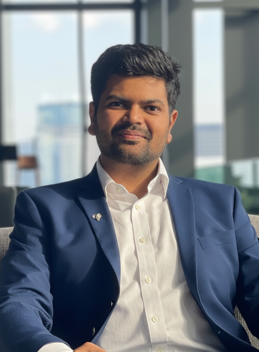

Aalok Thakkar
(આલોક ઠક્કર)

thakkar @ ashoka.edu.in
News
2026
Dec FSTTCS 2026 will be held at IIT Delhi from December 16 to 18.
Dec We will host the Indian SAT-SMT School 2026 as a pre-FSTTCS 2026 workshop.
Dec We will host a workshop on Verification, Logic, and Cryptography (VeLCro) at CMI on December 11.
Dec I have been selected for the INSA Visiting Scientist Programme 2026–27. I will be at CMI from December 2026 to January 2027, working with Aiswarya on the synthesis of string transducers.
Dec ACM COMPUTE 2026 will be held at Amrita Vishwa Vidyapeetham, Coimbatore, from December 3 to 5.
Dec I will attend ATVA 2026 to present our paper “How Often Does Your Program Fail?”, joint work with Arnab Ray.
Nov We will celebrate 10 years of Bhāvanā in Bengaluru, with the release of the October 2026 issue and a commemorative booklet.
Oct Devesh Bajaj will present our work on Detecting Elephant Vocalisations at ConfAI 2026, Plaksha University.
Oct I will visit Krea University on October 7 and 8, giving two talks: “When is a Quadratic a Perfect Square?” and “Clowns to the Left of Me, Jokers to the Right”.
Oct Our papers “The Trust a Protocol Needs” and “Defining Purpose Limited Secrets”, joint work with Bhumika Mittal, have been accepted at ICISS 2026.
Sep I will give two talks at CMI on September 30: “Clowns to the Left of Me, Jokers to the Right” and “Computing the Square Root of 2”.
Sep/Oct I will visit FP Launchpad at IIT Madras from September 28 to October 10.